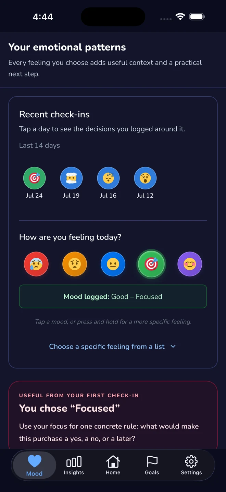
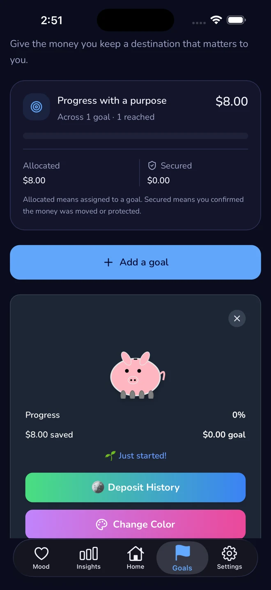

Impulse shows up fast
The problem often happens before a detailed budget workflow is even open, which is why fast logging matters.
ImpulseLog gives you a fast way to track resisted purchases, pause unsure buys, plan shopping lists, recognize trigger patterns, and build visible proof that you are making progress. It is designed for the reality of ADHD spending behavior, not for perfect spreadsheet discipline.

The problem often happens before a detailed budget workflow is even open, which is why fast logging matters.
Stress, boredom, reward-seeking, and time blindness can all push buying behavior, so context matters too.
People stick with a tool when it makes progress visible. That is why goals, streaks, and challenges belong in the loop.
Instead of only tracking completed transactions, you can log the purchase you almost made. That makes self-control visible instead of invisible.
The goal is not only to record what happened, but to learn what tends to happen before the urge arrives.
Track how you felt around resisted purchases so patterns become more obvious over time.

Saved money gets a destination. That helps the app feel like movement toward something, not only avoidance.
You can understand ADHD money patterns and still have no obvious action when the urge hits in a store or online cart.
You get a short loop: log the urge, add context, pause or plan, and let the pattern become visible over time.
ImpulseLog is built for the real moment when attention, emotion, and convenience collide. Start small, keep the win visible, and learn what actually helps you spend with more intention.